Галерэя
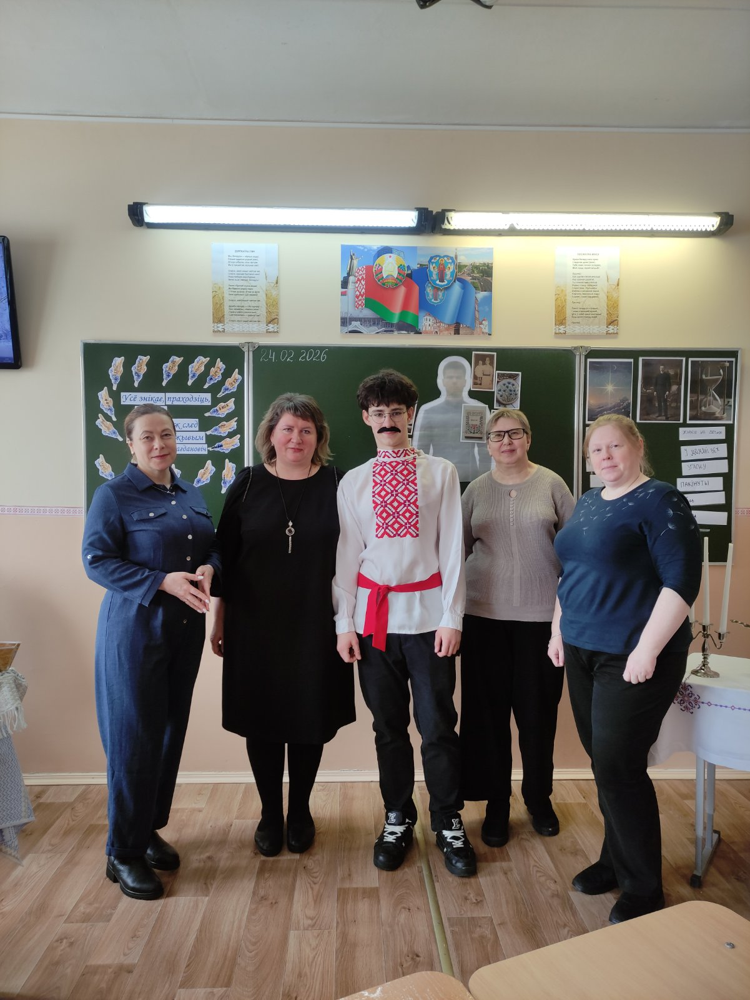
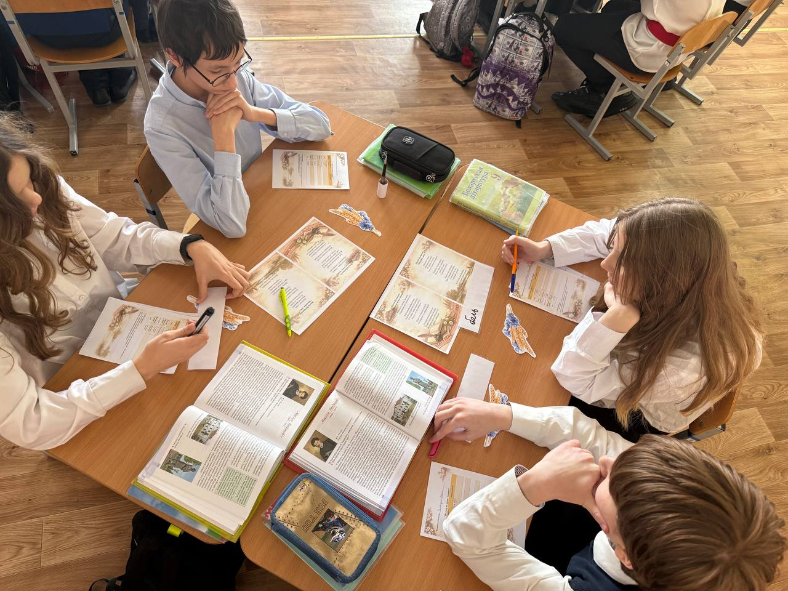
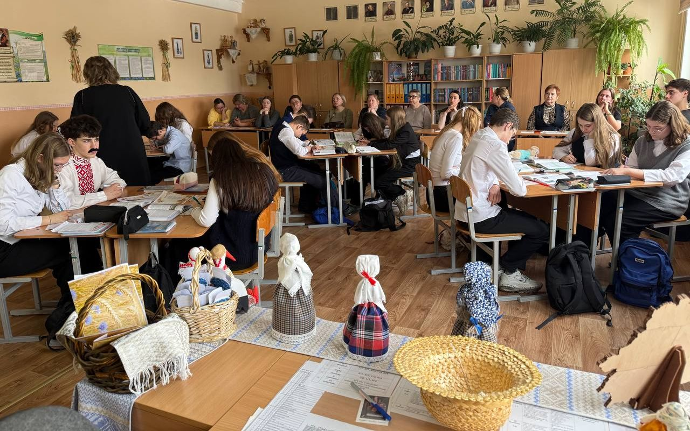
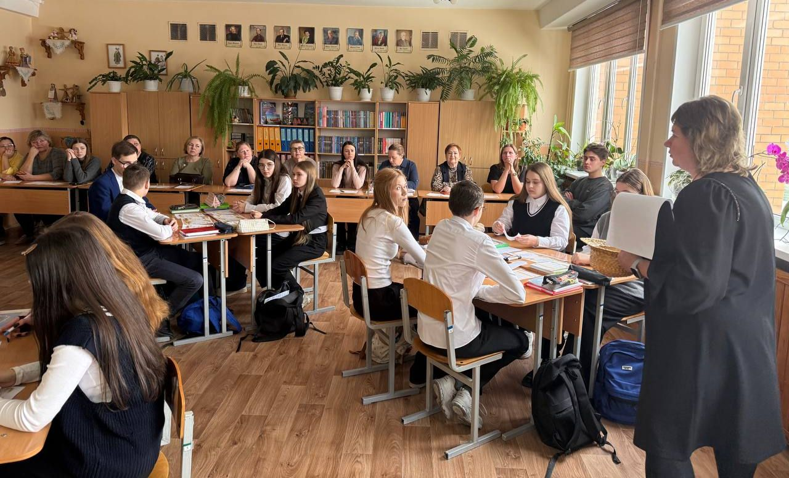
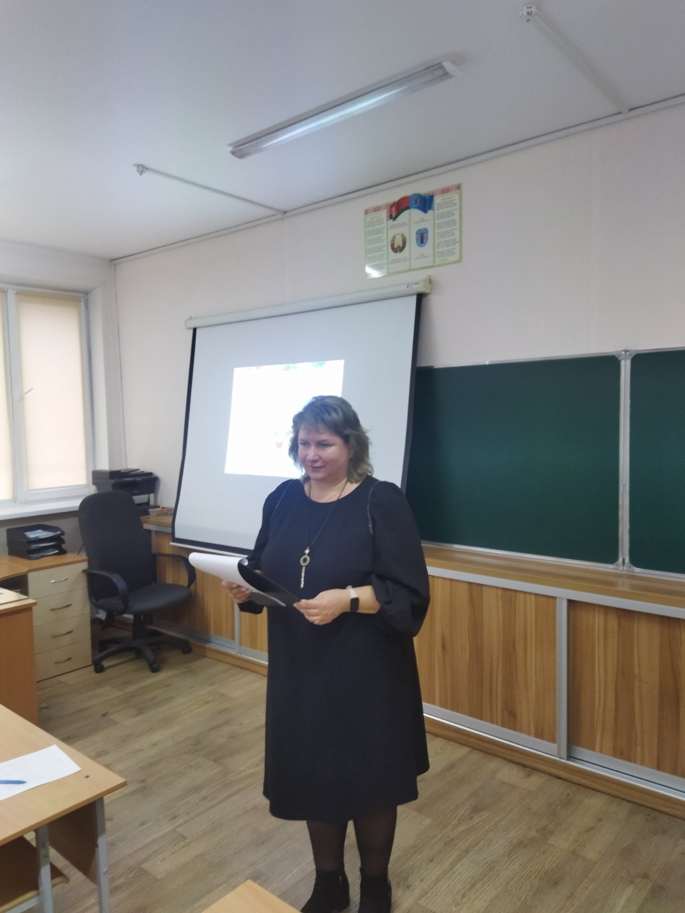
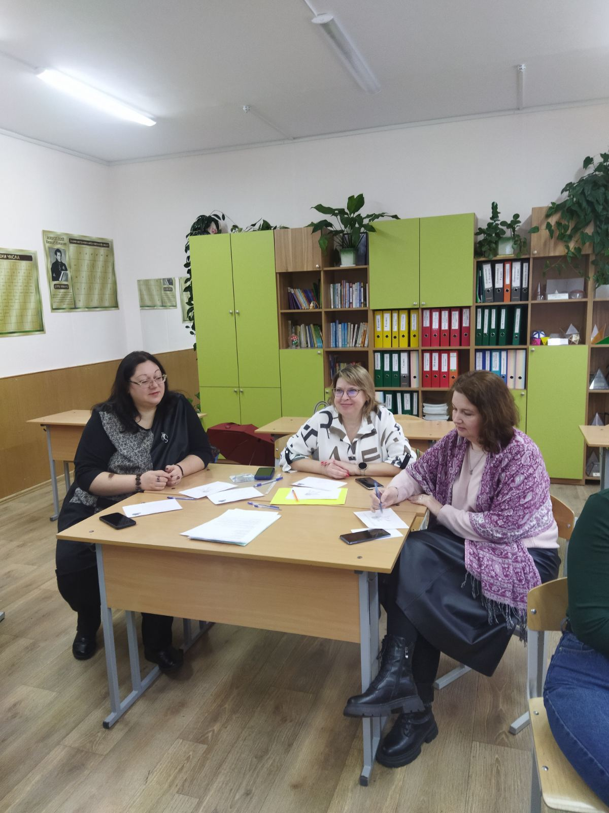
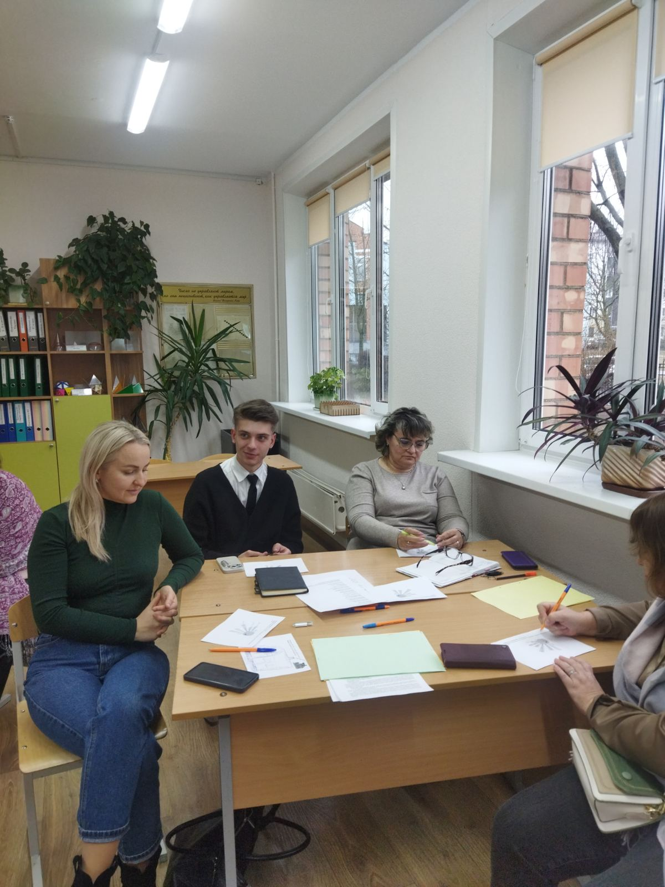
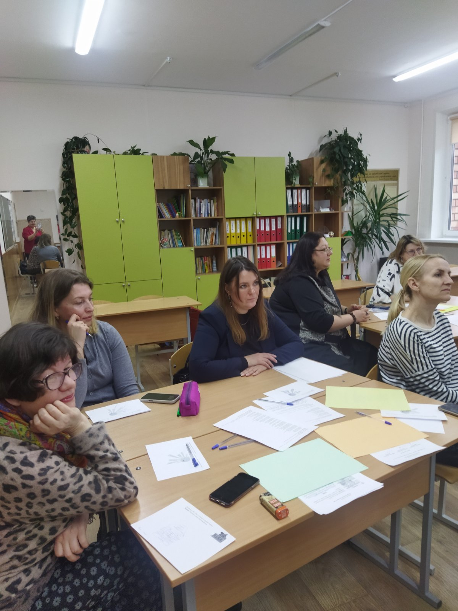
Учора быў асаблівы вечар — я сустрэлася са сваімі вучнямі на вечары сустрэчы выпускнікоў. Гэта неверагодна хвалююча і радасна, калі праз столькі гадоў цябе пазнаюць, падыходзяць, абдымаюць і дзякуюць. Чуць словы ўдзячнасці ад тых, каму калісьці давала веды, бачыць іх дарослыя, шчаслівыя твары — сапраўдная ўзнагарода для настаўніка. Такія моманты напаўняюць сэрца цяплом і разуменнем: мы працуем не дарма. Дзякуй, мае дарагія выпускнікі, што памятаеце!
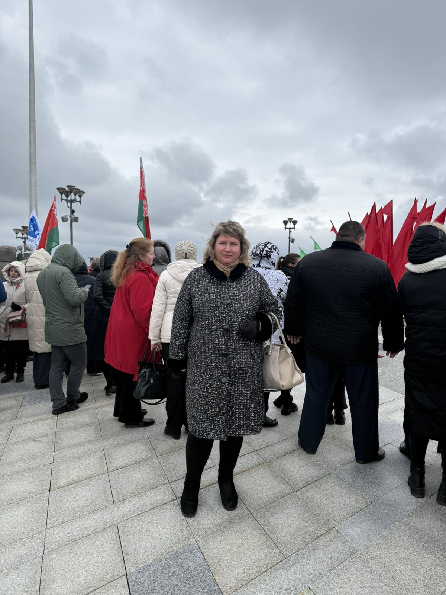
Для мяне вялікі гонар і адказнасць стаць сведкам гістарычнага моманту — сёння я прысутнічаю на інаўгурацыі Прэзідэнта Рэспублікі Беларусь А. Р. Лукашэнкі ў якасці прадстаўніка нашай школы. Я ганаруся даверам калег і магчымасцю прадстаўляць педагагічную супольнасць на такой значнай для краіны падзеі. Наперадзе шмат працы, але такія моманты нагадваюць, дзеля чаго мы працуем кожны дзень.
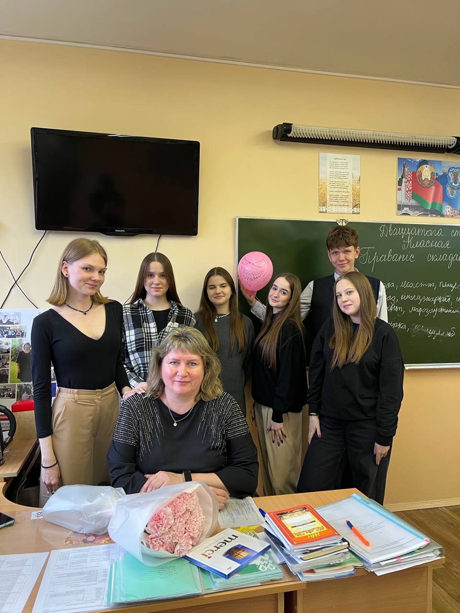
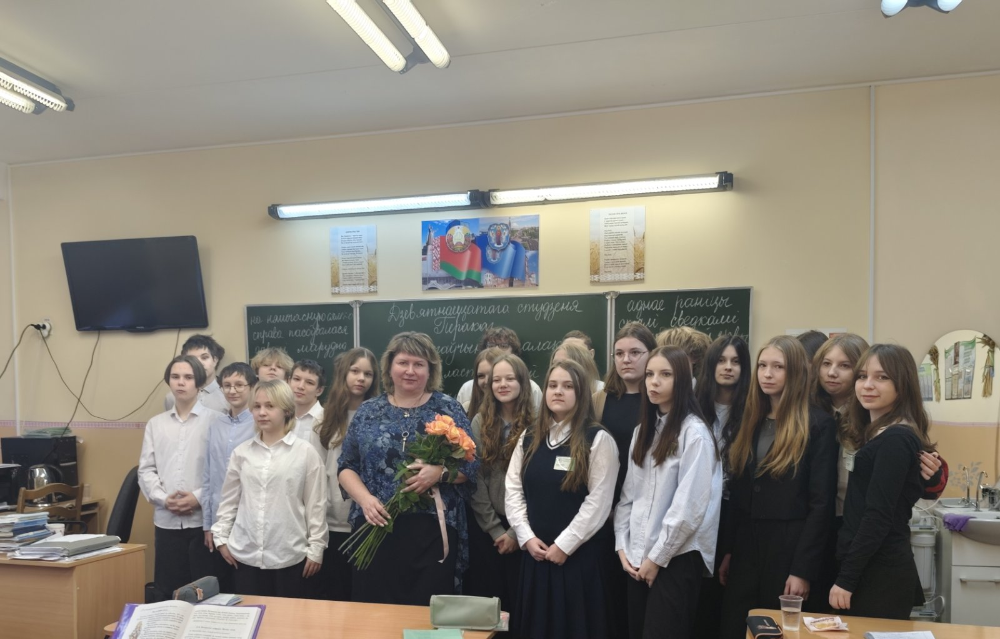
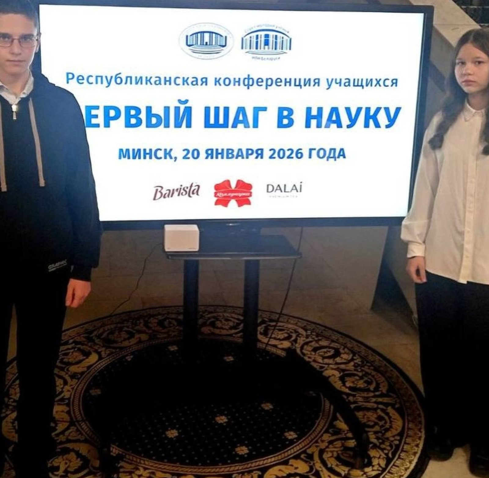
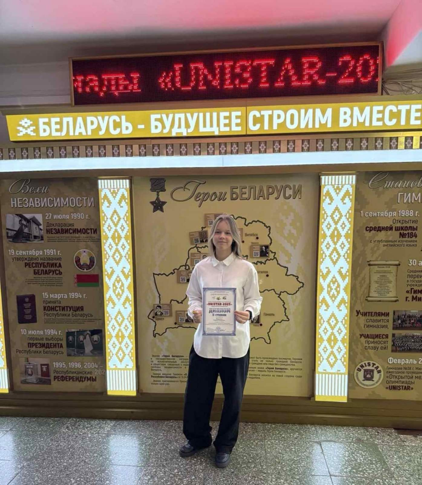